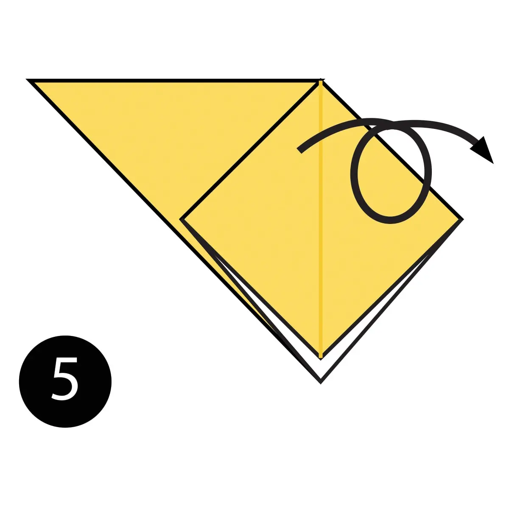
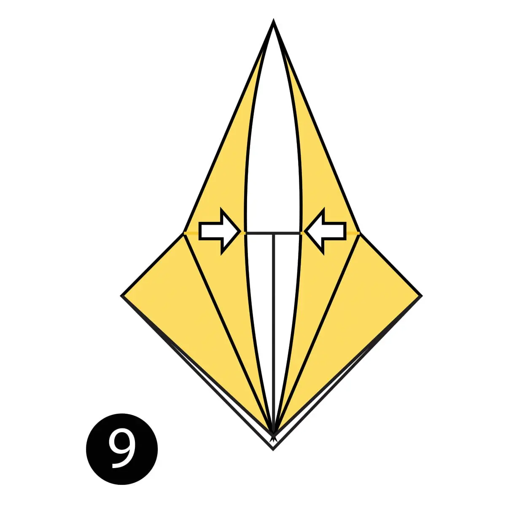
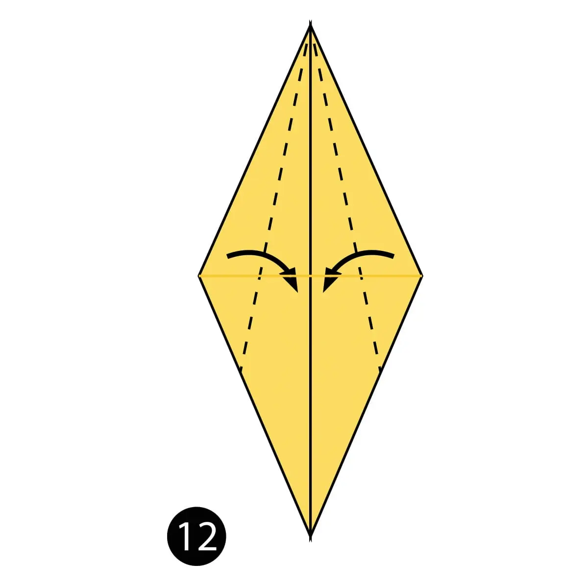
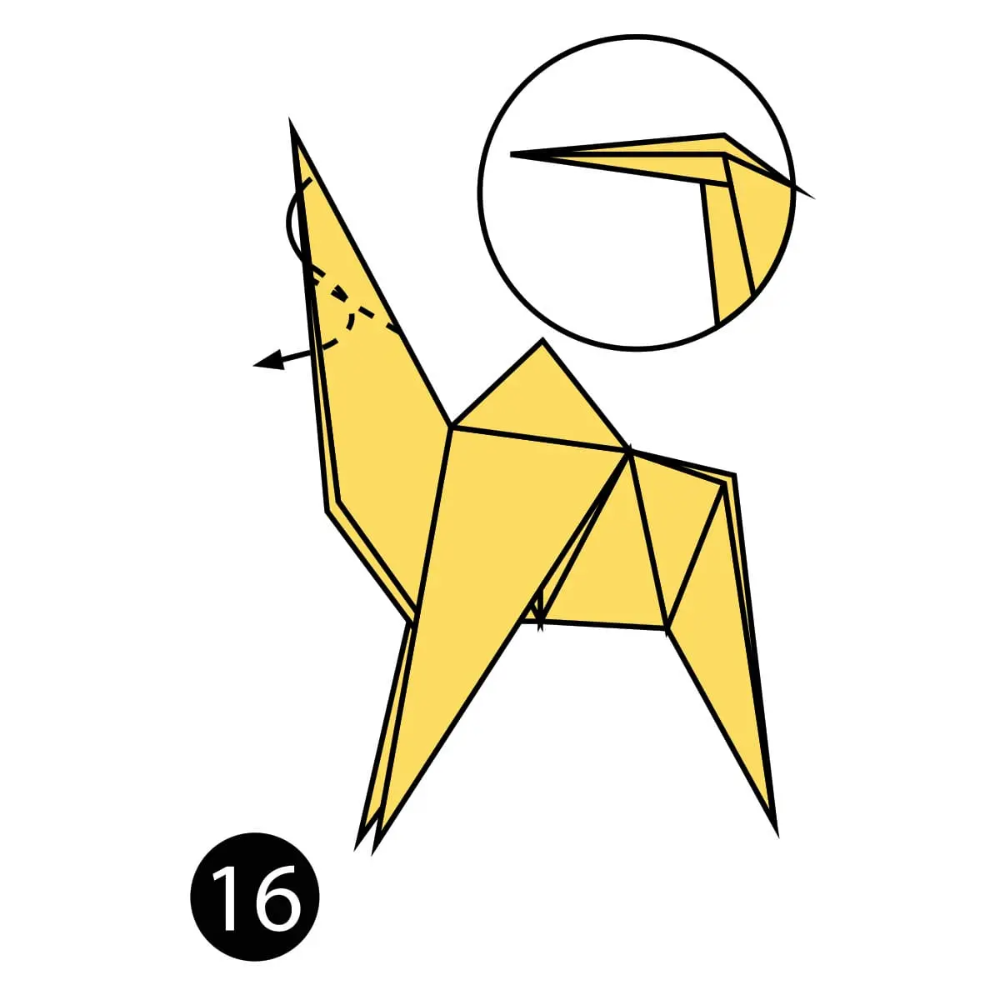
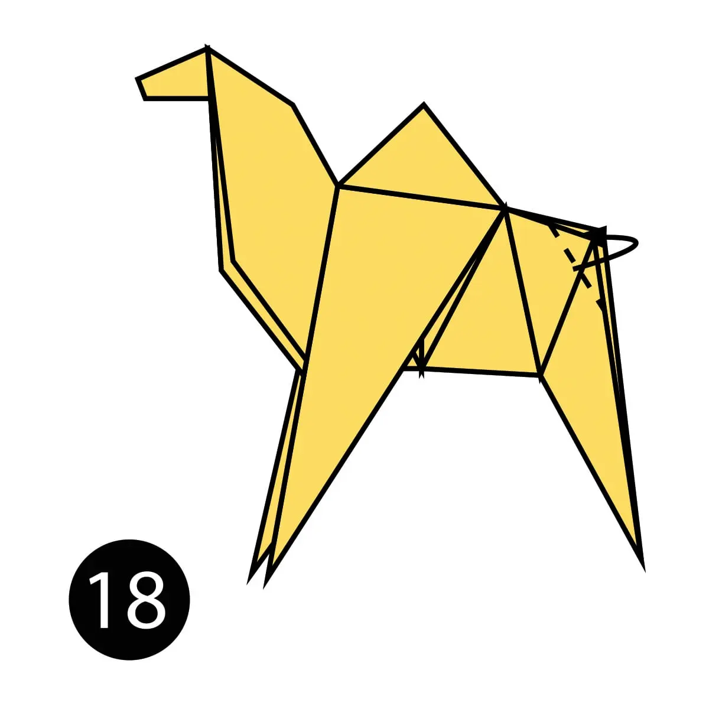

I. Fold the paper in half.

II. Fold the paper in half again.

III. Open the top flap of paper over to the right.

IV. Squash fold this flap down .
V. Turn the paper over .

VI. open the top flap of paper over to the left and Squash Fold it down .

VII. Fold and Unfold the sides and the top along the dotted lines. You’ll use these creases in the next step .

VIII. Open up the top layer of paper and fold it up using the crease from the previous step .
IX. Fold in both sides along the existing creases making a Petal Fold .

X. Turn the paper over .

XI. Repeat steps 7-9 on this side .
XII. Fold both sides to the centre along the dotted lines. Then repeat on the other side .

XIII. Inside Reverse Fold up both sides of the paper just like in a paper crane .

XIV. Reverse Fold the back part down to make the back legs .

XV. Fold the top flap of paper down and repeat on the other side to make the front legs .
XVI. Reverse Fold the tip down to make the head .

XVII. Inside Reverse Fold the tip of the head .
XVIII. Fold the back of the leg inside the model along the dotted line. Repeat on the other side .

XIX. The completed camel .